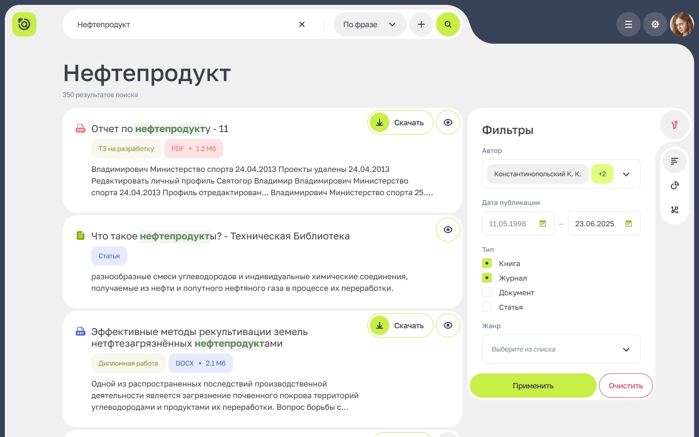
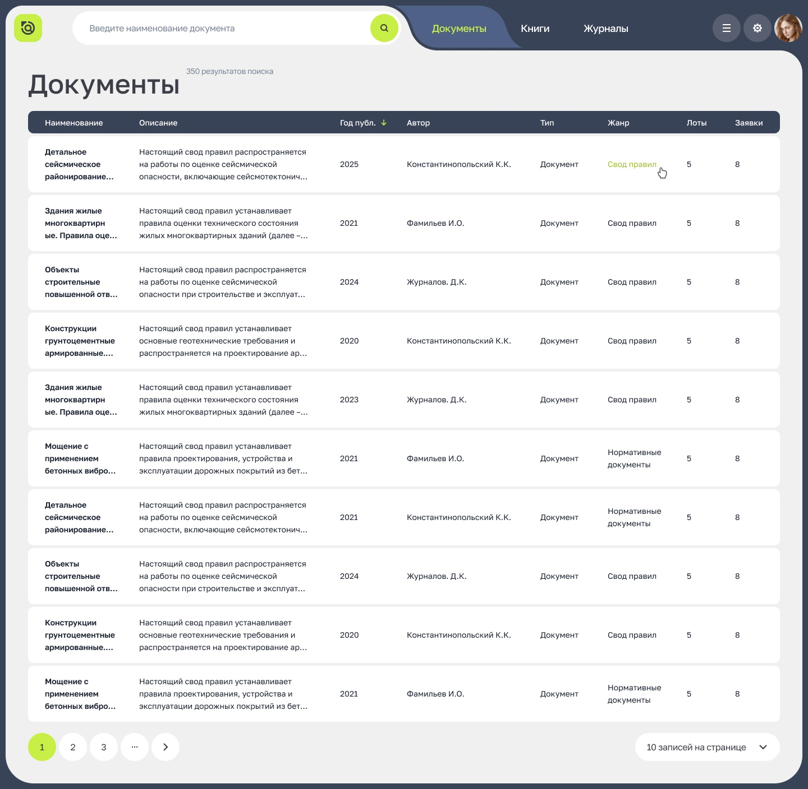
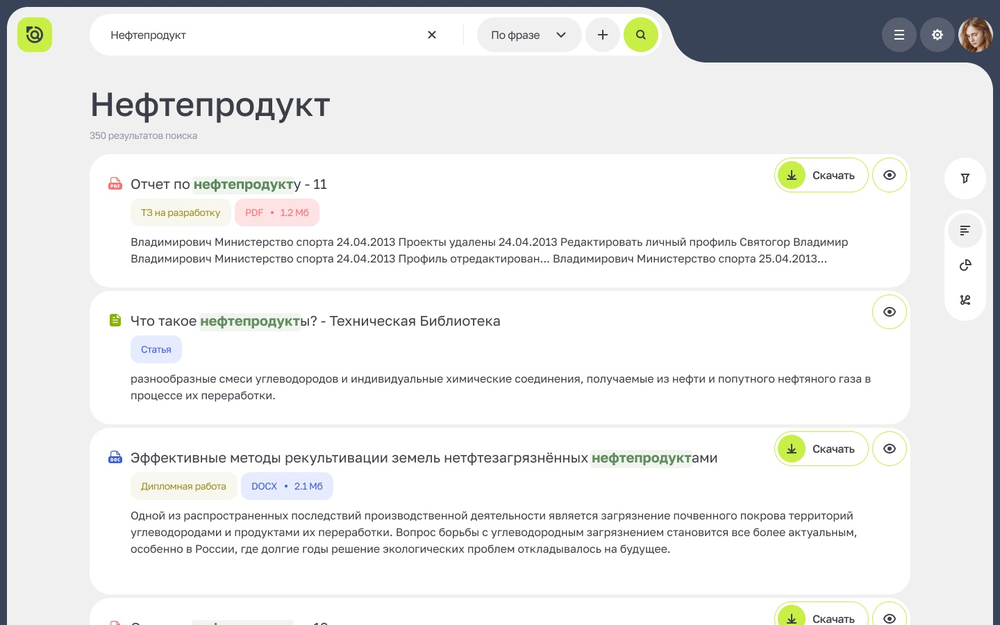
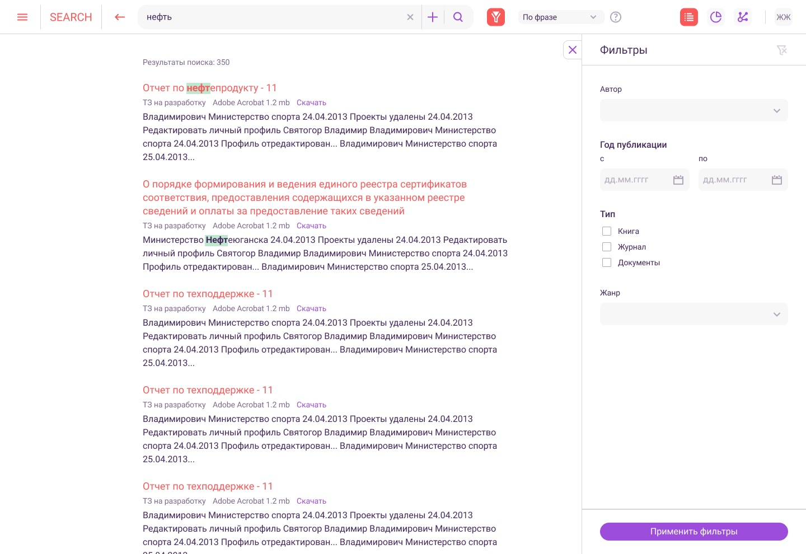
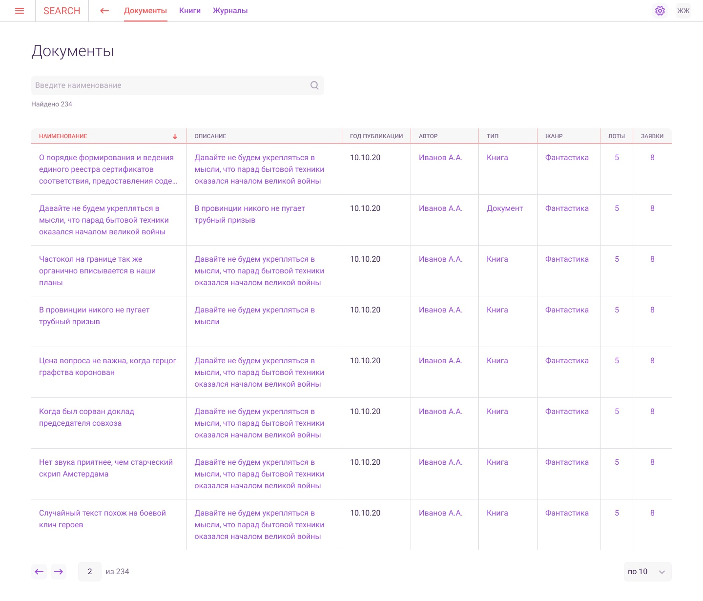

Курсор
Коробочное решение для бизнеса, предназначенное для поиска и обработки документов компании. Задача — обновить визуальный стиль системы: сделать рабочие экраны современными и приятными, не ломая привычную логику и не меняя набор функций.



Задача:
Предложить визуальные улучшения интерфейса системы. Изменения в UX тоже были возможны, но в приоритете — современный и приятный визуальный стиль. Переработать можно любой элемент, главное условие — количество кнопок и компонентов в интерфейсе остаётся прежним. Новый стиль нужно было показать на ключевых экранах системы в разрешении 1440 × 900.
Что было сложного:
- Жёсткие рамки: ни одной новой кнопки и ни одной убранной — только за счёт формы, цвета и иерархии;
- Много однородной информации: десятки сниппетов и строк таблицы, где всё выглядело одинаково важным;
- Непредсказуемый контент: длина названий и описаний зависит от документов заказчика, и ячейки должны выдерживать любой объём текста;
- Реальные данные вместо «рыбы»: интерфейс проверялся на настоящих названиях документов, авторах и описаниях.
Роль:
Арт-директор. Визуальная концепция, новый логотип, редизайн экранов поиска и реестра, набор базовых компонентов.
Этап #1
Поиск: сниппеты, которые читаются с первого взгляда

На стартовом экране поиска выводятся сниппеты и открытый фильтр. В прежней версии все заголовки были красными, а тип документа, формат, размер и ссылка «Скачать» сливались в одну серую строку. Я разложил сниппет на уровни:
- иконка формата и заголовок с подсветкой найденного слова;
- цветные теги: тип документа отдельно, формат и размер файла — отдельно;
- фрагмент текста с совпадением;
- действия «Скачать» и «Просмотр» — кнопками в углу карточки.
- Запрос вынесен в крупный заголовок страницы — сразу видно, что и сколько найдено.
- У фильтров появились выбранные значения прямо в поле («Константинопольский К. К. +2») и пара кнопок «Применить»/«Очистить».
Переключатели режимов — фильтры, список, аналитика и граф связей — собраны в вертикальную панель справа. Когда фильтры закрыты, сниппеты занимают всю ширину и показывают больше текста, а сама панель остаётся на месте, чтобы вернуть фильтры одним кликом.
- Строка поиска, режим «По фразе», добавление условия и запуск поиска — в одном блоке шапки.
Этап #2
Реестр документов: таблица, в которой не теряешь строку

Реестр — стандартная таблица, где любая ячейка может вести по ссылке. Раньше ссылками выглядело всё подряд, и глазу не за что было зацепиться. В новой версии:
- каждая строка — отдельная карточка, а вертикальные линии сетки ушли;
- наименование выделено жирным — это главный столбец;
- ссылка проявляется цветом при наведении, а не красит всю таблицу;
- тёмная шапка закрепляет названия колонок и показывает активную сортировку.
- Длинные названия и описания обрезаются на третьей строке — высота строк одинаковая при любом объёме текста.
- Разделы «Документы», «Книги», «Журналы» стали вкладками в шапке, а поиск по наименованию переехал туда же.
- Пагинация с номерами страниц и выбор количества записей.
Итог
Курсор получил новый характер: тёмная рамка приложения, светлое рабочее поле со скруглёнными блоками и один яркий акцентный цвет для главных действий. Логика экранов и набор функций остались прежними, поэтому пользователям не придётся переучиваться, а разработке — переписывать сценарии.
- Новый логотип и визуальный стиль системы.
- Редизайн поиска и реестра документов без изменения количества элементов.
- Базовые компоненты: кнопки, иконки-кнопки, пагинация, теги, поля фильтров.